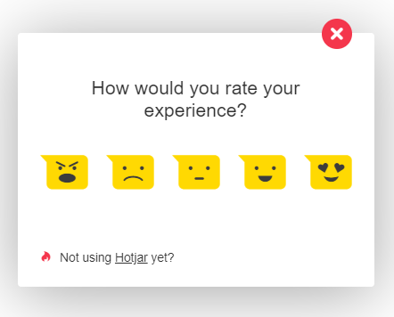

M5 - Validation 2: Lead Generation and Collection
1. Add a lead collection section to your landing page
To get in touch with potential customers, we used Formspree to make the subscribtion option:

To collect feedback from users (about what we should improve), we used Hotjar (which allowed us to use a feedback form):

2. Add analytics on your landing page
We add Google Analytics for tracking the number of visitors:
We used Hotjar to analyse click-maps and user recordings:
3. Bring people on your landing page
To reach out a relevant number of visitors, we posted on social platforms as Facebook & Linkedin:
Linkedin: https://www.linkedin.com/feed/update/urn:li:activity:6469451135097798656
Facebook: https://www.facebook.com/alistar.andreea/posts/950599518466593

4. Document the entire lead generating campaign on your Fiki
Using the right tools, we collected: